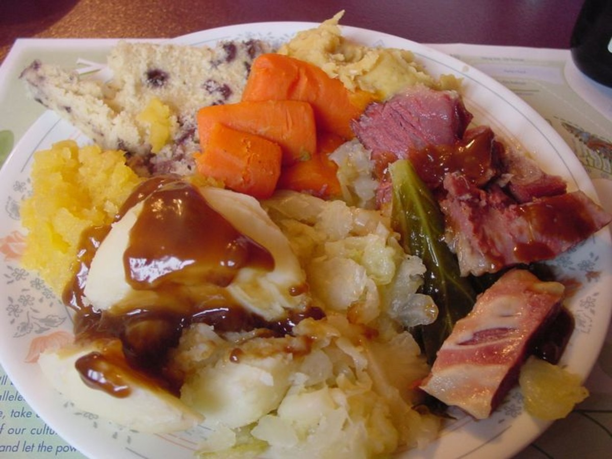

ExperienceNL
Explore Newfoundland
ExperienceNL is dedicated to bringing you to the rugged landscapes of Newfoundland, the most delicious local food and the best annual province wide events for you to discover on your journey to Newfoundland and Labrador. Immerse yourself in the rich culture, history and beauty of Canada’s Rock.
Make this trip one to remember by choosing ExperienceNL!

Where to Eat
Best of NL cuisine
To Do in NL
Beautiful scenery, rich history & heritage
NL Events
Experience music, curlture and festivities
Sponsors
- Newfoundland Herald
- NL Buy & Sell
- OZFM
- ExxonMobil

We strive to give back to our community to help preserve our province’s natural beauty and support the people and animals that call Newfoundland and Labrador home.
Newfoundland Charities
- St. John’s SPCA
- Rainbow Riders
- Janeway Foundation
- VOCM Cares